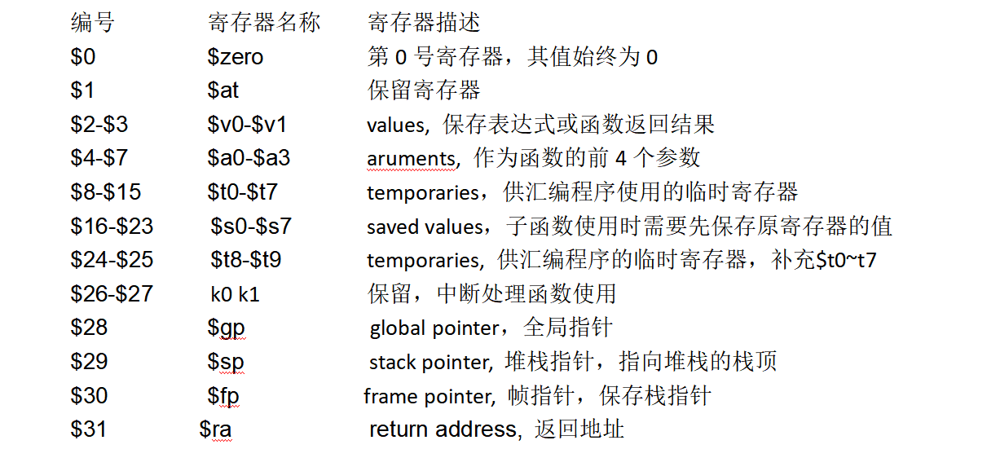
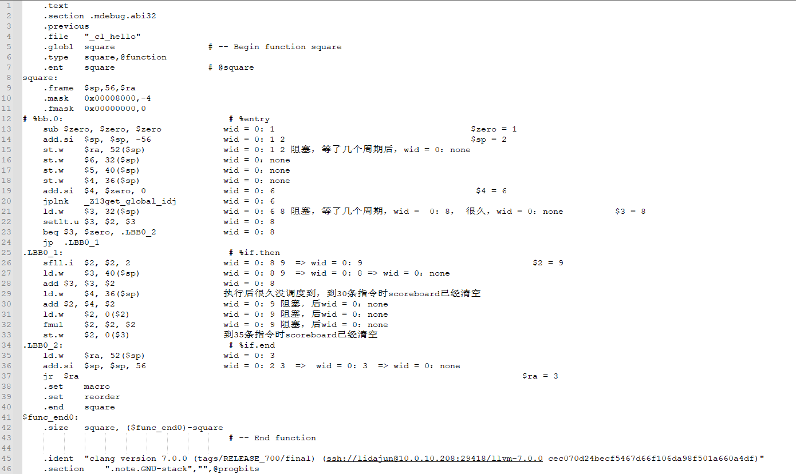

Scoreboard
定义在Scoreboard类中，只有寄存器状态表和长操作状态表（从代码看目前load操作认为是长操作）。
class Scoreboard {
public:
Scoreboard(unsigned sid, unsigned n_warps, class gpgpu_t *gpu);
void reserveRegisters(const warp_inst_t *inst);
void releaseRegisters(const warp_inst_t *inst);
void releaseRegister(unsigned wid, unsigned regnum);
bool checkCollision(unsigned wid, const inst_t *inst) const;
bool pendingWrites(unsigned wid) const;
void printContents() const;
const bool islongop(unsigned warp_id, unsigned regnum);
private:
void reserveRegister(unsigned wid, unsigned regnum);
int get_sid() const { return m_sid; }
unsigned m_sid;
// keeps track of pending writes to registers
// indexed by warp id, reg_id => pending write count
std::vector<std::set<unsigned> > reg_table;
// Register that depend on a long operation (global, local or tex memory)
std::vector<std::set<unsigned> > longopregs;
class gpgpu_t *m_gpu;
};
冲突检测
Scoreboard::checkCollision(unsigned wid, const class inst_t* inst)函数实现冲突检测。基本原理是根据warpid检查当前指令中的寄存器有没有出现在reg_table中，如果在该寄存器表中，就表示冲突，否则不冲突。这里并未区分目的寄存器和源寄存器。
Issue stage 会将发射指令的寄存器记录在reg_table中
stream_processor::issue_warp()调用Scoreboard::reserveRegisters(const class warp_inst_t* inst)
在该函数ptx_instruction::pre_decode()中初始化out[]/in[]，以及arch_reg.src/arch_reg.dst

[Question]
目前发现reg_table中有6和8，而next指令需要用8，所以冲突检测失败
4个TPC中第一个tpc完成，其余4个tpc都没有完成
Scoreboard的分析过程，发现可能就是因为慢
